Все районы Москвы
125 районов по административным округам. У каждого — страница с ценой метра, экологией, транспортом, школами и поликлиниками, спортом и микроклиматом. Сравнить районы на карте можно на главной.
Центральный административный округ
 Арбат
Арбат Басманный
Басманный Замоскворечье
Замоскворечье Красносельский
Красносельский Мещанский
Мещанский Пресненский
Пресненский Таганский
Таганский Тверской
Тверской Хамовники
Хамовники Якиманка
ЯкиманкаСеверный административный округ
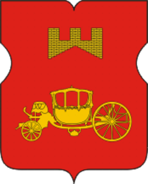
Аэропорт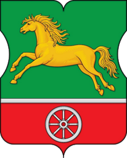
Беговой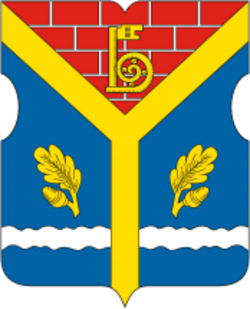
Бескудниковский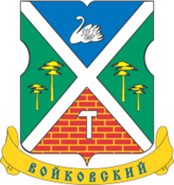
Войковский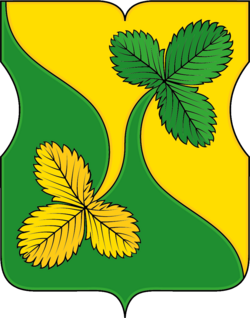
Восточное Дегунино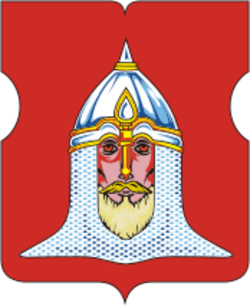
ГоловинскийДмитровский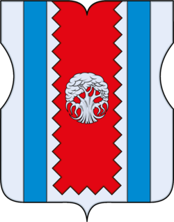
Западное ДегуниноКоптево Левобережный
Левобережный Молжаниновский
Молжаниновский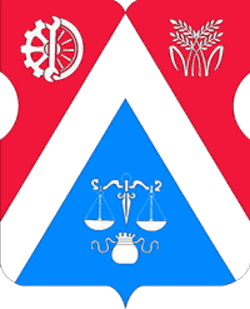
Савеловский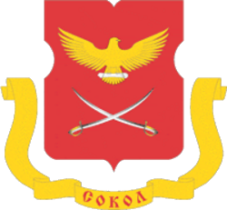
Сокол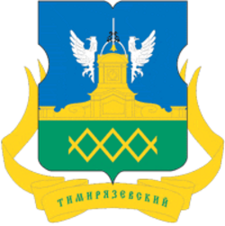
Тимирязевский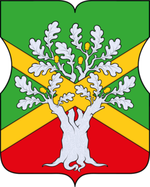
Ховрино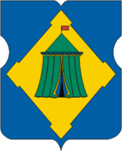
ХорошевскийСеверо-Восточный административный округ
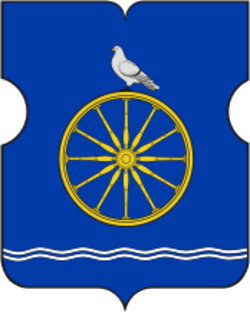
Алексеевский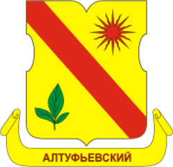
АлтуфьевскийБабушкинский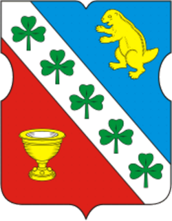
Бибирево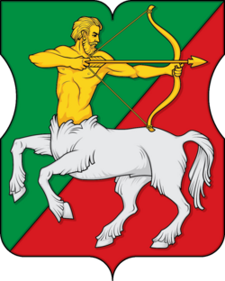
Бутырский Лианозово
Лианозово Лосиноостровский
Лосиноостровский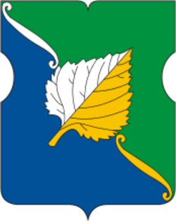
Марфино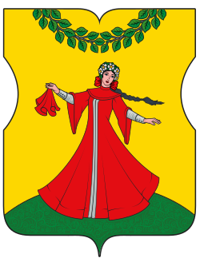
Марьина роща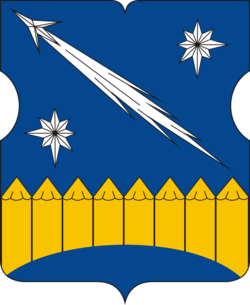
Останкинский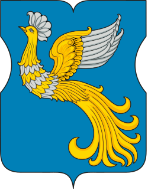
Отрадное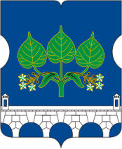
Ростокино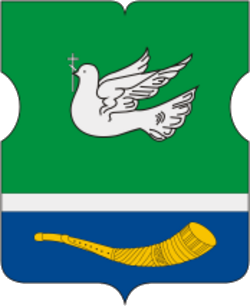
Свиблово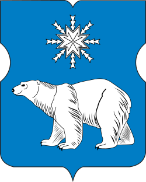
Северное Медведково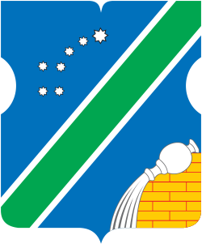
Северный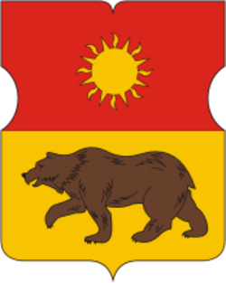
Южное Медведково Ярославский
ЯрославскийВосточный административный округ
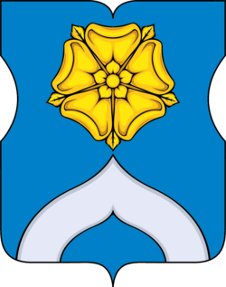
Богородское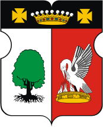
Вешняки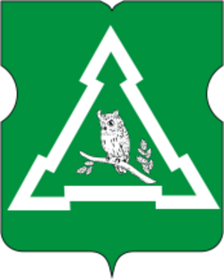
Восточное Измайлово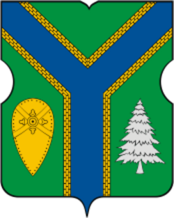
Восточный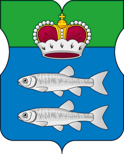
Гольяново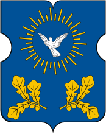
Ивановское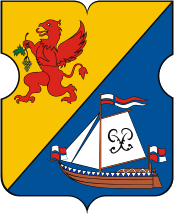
Измайлово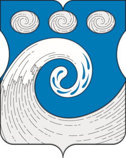
Косино-Ухтомский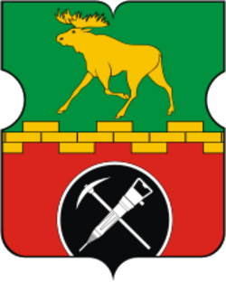
Метрогородок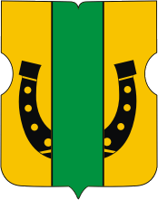
Новогиреево Новокосино
Новокосино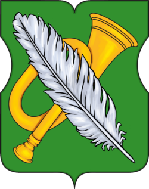
Перово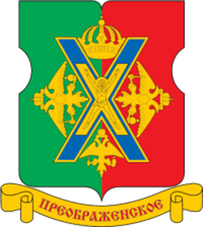
ПреображенскоеСеверное Измайлово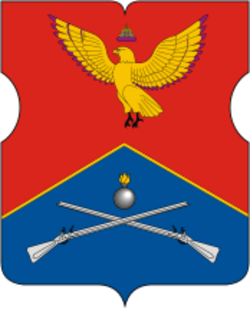
Соколиная гора Сокольники
СокольникиЮго-Восточный административный округ
 Выхино-Жулебино
Выхино-Жулебино Капотня
Капотня Лефортово
Лефортово Люблино
Люблино Марьино
Марьино Некрасовка
Некрасовка Нижегородский
Нижегородский Печатники
Печатники Рязанский
Рязанский Текстильщики
Текстильщики Южнопортовый
ЮжнопортовыйЮжный административный округ
 Бирюлево Восточное
Бирюлево Восточное Бирюлево Западное
Бирюлево Западное Братеево
Братеево Даниловский
Даниловский Донской
Донской Зябликово
Зябликово Москворечье-Сабурово
Москворечье-Сабурово Нагатино-Садовники
Нагатино-Садовники Нагорный
Нагорный Орехово-Борисово Северное
Орехово-Борисово Северное Орехово-Борисово Южное
Орехово-Борисово Южное Чертаново Северное
Чертаново Северное Чертаново Центральное
Чертаново Центральное Чертаново Южное
Чертаново ЮжноеЮго-Западный административный округ
 Академический
Академический Гагаринский
Гагаринский Зюзино
Зюзино Коньково
Коньково Котловка
Котловка Ломоносовский
Ломоносовский Обручевский
Обручевский Северное Бутово
Северное Бутово Теплый Стан
Теплый Стан Черемушки
Черемушки Южное Бутово
Южное Бутово Ясенево
ЯсеневоЗападный административный округ
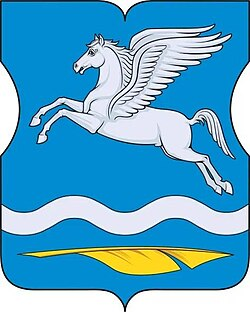
Внуково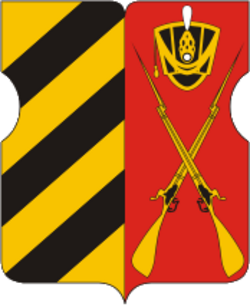
Дорогомилово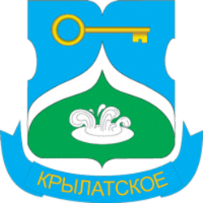
Крылатское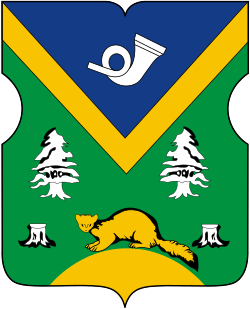
Кунцево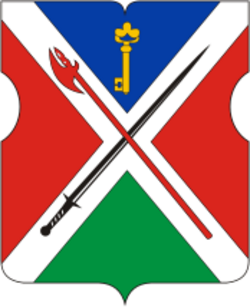
Можайский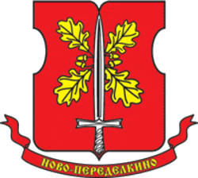
Ново-Переделкино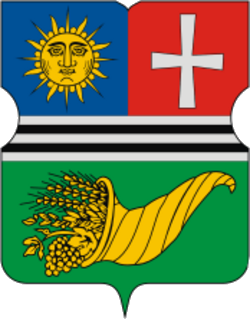
Очаково-Матвеевское Проспект Вернадского
Проспект Вернадского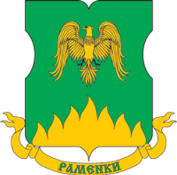
Раменки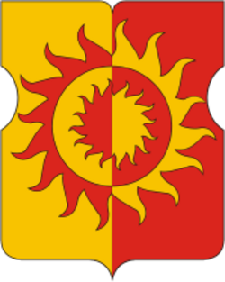
Солнцево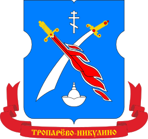
Тропарево-Никулино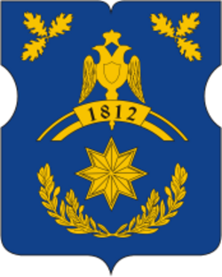
Филевский парк Фили-Давыдково
Фили-ДавыдковоСеверо-Западный административный округ
 Куркино
Куркино Митино
Митино Покровское-Стрешнево
Покровское-Стрешнево Северное Тушино
Северное Тушино Строгино
Строгино Хорошево-Мневники
Хорошево-Мневники Южное Тушино
Южное ТушиноЗеленоградский административный округ
 Савелки
Савелки Старое Крюково
Старое КрюковоДанные: экорейтинг EcoStandard и замеры Мосэкомониторинга, цены — объявления Циана (ноябрь 2026), транспорт, школы, поликлиники, спорт и магазины — OpenStreetMap (ноябрь 2026), население — Росстат и Wikidata 2025, гербы — Викисклад. Подробно о методике — на страницах экологии, цен, транспорта, городской среды и географии. Все районы Москвы · Рейтинги районов: лучшие, экология, зелёные, дешёвые, для семьи.